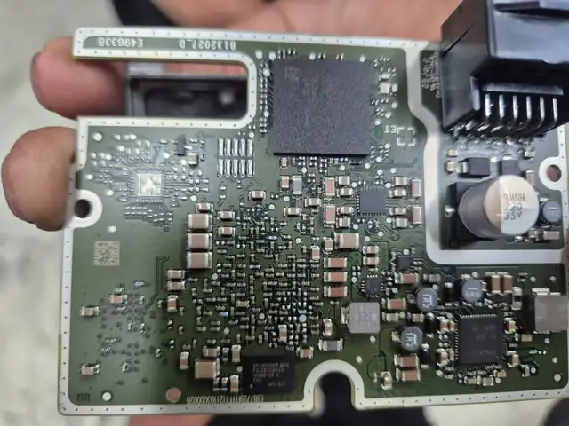
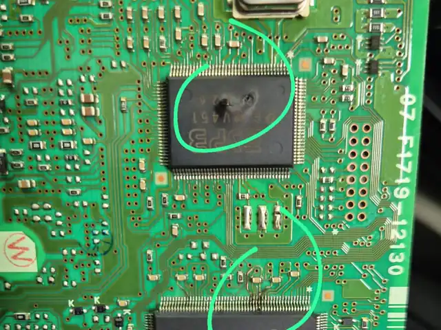
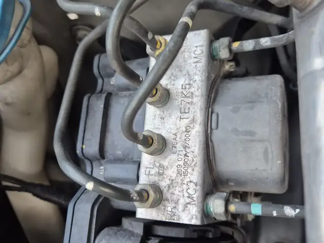
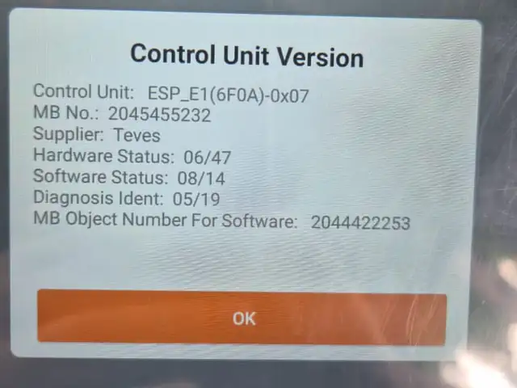
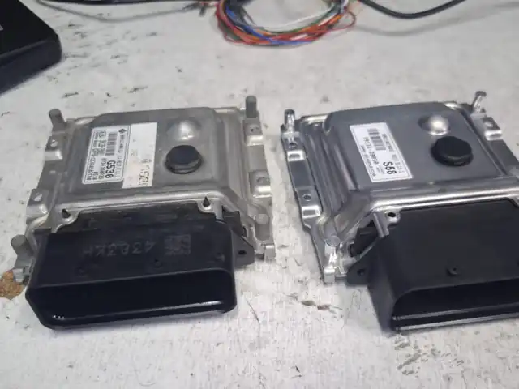
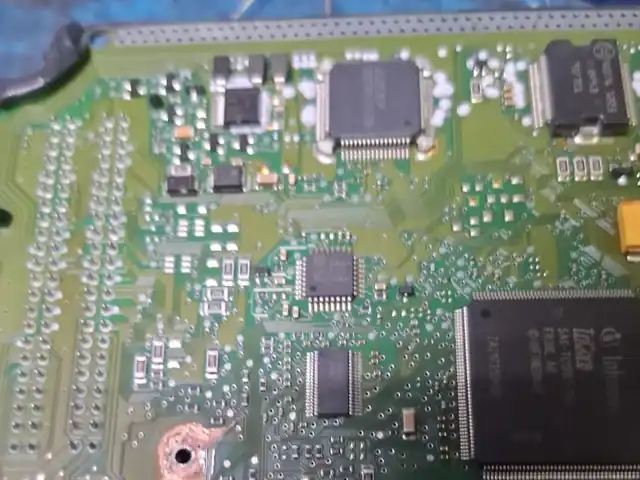
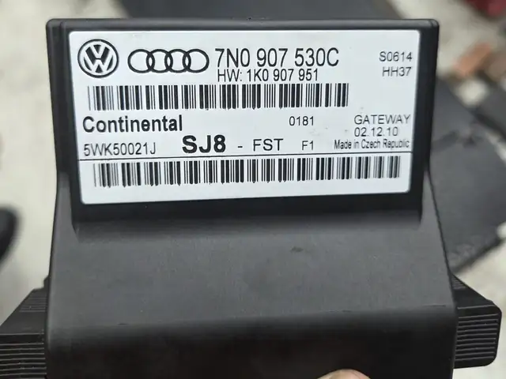
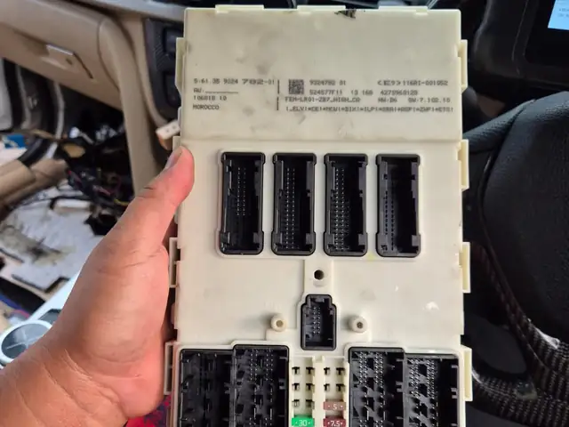
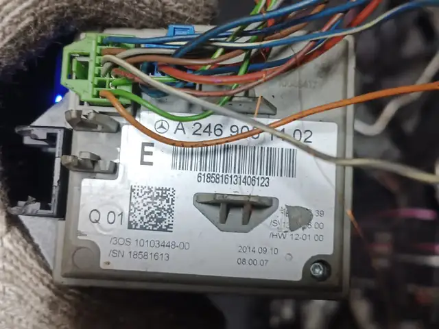

ECU & ABS Repair Specialist in Singapore
The ECU Clinic repairs, replaces and programs engine, gearbox and ABS control units for continental and Asian cars. WhatsApp us your fault code, chassis number and car model to get started.
- 6-month warranty
- Pick-up & delivery
- 10+ years’ experience
- Mon–Sat 10am–6pm
Why drivers and workshops come to The ECU Clinic
When a warning light won’t go away, the fault is often in a control unit. That is what we fix.
Board-level repair
We repair the control unit itself, down to the circuit board.
Repair, recon, used or new
More than one way to fix it: repair, reconditioned, used or new units.
ECU and ABS focus
Engine, gearbox and ABS control units are what we work on every day.
Over a decade of experience
Our team has more than ten years of experience with car electronics.
Pick-up and delivery
Can’t come in? Pick-up and delivery service is available.
6-month warranty
Our repairs come with a 6-month warranty.
Our services
ECU and ABS repair, replacement units, and programming and coding, in one place.

ECU Repair & Replacement
We repair the engine control unit itself, or supply a new, used or reconditioned unit when that is the better fix.
- ECU repair
- New and used ECUs
- Recon transmission ECU and MU for Toyota Prius, Noah, Voxy and Aqua
- VAG mechatronics and gateway repair

ABS Pump & Module Repair
ABS warning light or brake system fault? We repair ABS modules and supply used and reconditioned ABS pumps.
- ABS module repair
- Used and recon ABS pumps
- Toyota Voxy, Noah and Sienta ABS pump and module: repair, replace, used or recon
- Plug and play available

Programming & Coding
Software updates, fault code solutions and coding for engine, gearbox, safety and comfort systems.
- Software update
- DTC remove and coding
- Gearbox programming
- Radar coding and calibration
- AUX and media system coding
- Airbag coding
- i-stop function

Diesel & Key Programming
Diesel system work and key programming for BMW and Mercedes-Benz.
- AdBlue, EGR and DPF coding
- Catalytic system
- Diesel system optimisation
- BMW and Benz key programming
Car brands we work on
Continental and Asian cars. Not sure about yours? WhatsApp us the model.
- Audi
- BMW
- Chevrolet
- Honda
- Kia
- Mercedes-Benz
- Mini
- Nissan
- Skoda
- Toyota
- Volkswagen
- Volvo
- and more
Our work
Control units, ABS modules and circuit boards from cars we have worked on.




Visit us in Kaki Bukit
WhatsApp is the fastest way to reach us for enquiries and appointments.
Premier @ Kaki Bukit
8 Kaki Bukit Avenue 4, #06-43
Singapore 415875
Opening hours
- Mon – Sat
- 10:00am – 6:00pm
- Sun & PH
- Closed
After-hours appointments can be arranged. Pick-up and delivery available.
ECU & ABS repair FAQ
What should I send when I WhatsApp you?
Do you repair ECUs or replace them?
Can you repair my ABS pump or module?
Which car brands do you work on?
Is there a warranty?
Can you collect my car or module?
Which BMWs can have temperature programming?
Where are you and when are you open?
Warning light on?
WhatsApp us the fault code, chassis number and car model. We’ll tell you what we can do.